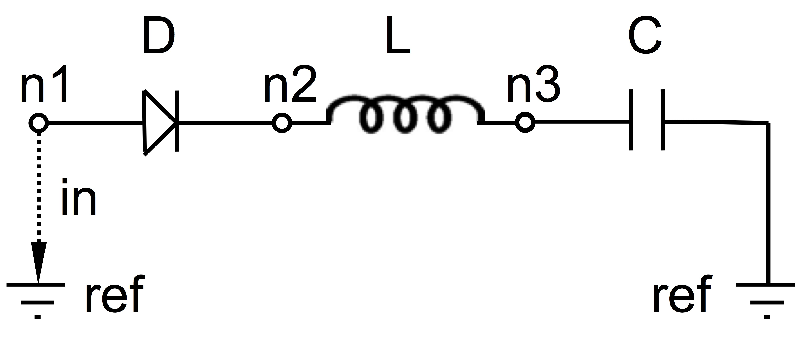

This is a companion site for the python package PyPHS, dedicated to the treatment of passive multiphysical systems in the Port-Hamiltonian Systems (PHS) formalism.
This software is developped by Antoine Falaize in association with the project/team S3 (Sound Signals and Systems) at STMS Research Lab (CNRS UMR 9912), hosted by IRCAM.
Introduction
PyPHS implements a set of numerical methods for the treatment of dynamical systems in the Port-Hamiltonian Systems (PHS) formalism. This structures physical systems into
- energy conserving parts,
- power dissipating parts and
- source parts.
Now, this guarantees a power balance is fulfilled, including for simulations based on an adapted numerical method.

- Systems are described by directed multi-graphs:
- use of Networkx MultiDiGraph for graph structure,
- use of Sympy for symbolic computations.
- The time-continuous port-Hamiltonian structure is build from an automated graph analysis (see [GraphAnalysis2016]).
- The discrete-time port-Hamiltonian structure is derived from a structure preserving numerical method (see [NumericalMethod2015]).
- LaTeX description code and C++ simulation code are automatically generated:

Example
Consider the following serial diode-inductor-capacitor (DLC) electronic circuit:
with the following physical parameters:
| Parameter | Description (SI unit) | Typical value |
| $I_s$ | Diode saturation current (A) | 2e-9 |
| $v_0$ | Diode thermal voltage (V) | 26e-3 |
| $\mu$ | Diode ideality factor (dimensionless) | 1.7 |
| $R$ | Diode connectors resistance ($\Omega$) | 0.5 |
| $L$ | Inductance value (H) | 0.05 |
| $C$ | Capacitance value (F) | 2e-06 |
1. Define the Netlist
Put the following content in a text file with .net extension, (here dlc.net):
2. Perform graph analysis
Run the following python code from the netlist file directory:
import pyphs # Read the 'dlc_netlist.net' netlist = pyphs.PHSNetlist('dlc.net') # Construct the graph associated with 'netlist' graph = pyphs.PHSGraph(netlist) # Construct the core Port-Hamiltonian System from 'graph' core = graph.buildCore()
3. Export $\LaTeX$
content = pyphs.netlist2tex(netlist) content += pyphs.core2tex(core) pyphs.document(content, title='DLC', filename='dlc.tex')
This yields the following tex file:
which is compiled to produce the following pdf file:
4. Export $\mathrm{C_{++}}$
# Numerical method for time discretization of 'core' method = pyphs.PHSNumericalMethodStandard(core) # Numerical evaluation of 'method' numcore = pyphs.PHSNumericalCore(method) # Export the set of C++ file for simulation pyphs.numcore2cpp(numcore)
This yields the following cpp files:
The phobj.h defines a class of DLC systems with passive update method for simulations.
Acknowledgement
The developped of this software began as a part of the PhD project of Antoine Falaize, under the direction of Thomas Hélie, through a funding from French doctoral school EDITE (UPMC ED-130), and in connection with the French National Research Agency project HaMecMoPSys between 2012 and 2016.
References
| [GraphAnalysis2016] | Falaize, A., & Hélie, T. (2016). Passive Guaranteed Simulation of Analog Audio Circuits: A Port-Hamiltonian Approach. Applied Sciences, 6(10), 273. |
| [NumericalMethod2015] | Lopes, N., Hélie, T., & Falaize, A. (2015). Explicit second-order accurate method for the passive guaranteed simulation of port-Hamiltonian systems. IFAC-PapersOnLine, 48(13), 223-228. |